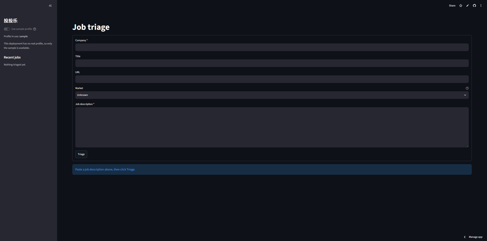

An AI agent that triages job postings with evidence带证据的招聘信息筛选 AI Agent
A scheduled prompt gives you a summary you have to trust. TouTouLe gives you a decision record you can verify, with a measured error rate on the fields where an error costs an opportunity.定时提示词只能给你一份需要信任的摘要；投投乐给你一份可以核验的决策记录，并且在“出错就会错失机会”的字段上有实测错误率。
- Problem问题
- Each posting took 15–20 minutes to check eligibility, application caps, deadline and required materials, and mistakes landed where they cost most.每条 JD 要花 15–20 分钟核对资格、投递上限、截止日期和材料要求，而最容易出错的恰好是代价最高的地方。
- My role我的角色
- Everything: PRD, decision log, eval design, labeling, code, deployment.全部独立完成：PRD、决策日志、评测设计、标注、开发和上线。
- Outcome结果
- v0.1.0 live. Critical hallucinations down 60–70% vs. baseline; critical misses held under 10%.v0.1.0 已上线。关键字段幻觉较基线下降 60–70%，关键字段漏检控制在 10% 以内。
- Evidence or nothing. Every extracted value carries a verbatim quote, and code checks it against the posting. A field that fails becomes “Not stated”.没有证据就不算数。每个抽取值都附原文引用，由代码逐字比对原文；校验失败的字段直接记为“未说明”。
- Rules decide eligibility, not the model. Six deterministic rules flag visa, graduation window, degree, deadline and cap problems.资格由规则判断，而不是模型。六条确定性规则检查签证、毕业时间、学位、截止日期和投递上限。
- Evals tiered by the cost of an error. 50 labeled postings, 3 iterations, and a written hypothesis before each run.按错误代价分层评测。50 条标注 JD，3 轮迭代，每轮先写下假设再运行。
- Say what it doesn’t do. The README lists the targets it missed and why.写清楚它做不到什么。README 列出了没达标的指标和原因。
| Metric (50 postings)指标（50 条 JD） | Target目标 | Plain prompt普通提示词 | Shipped v4上线版 v4 |
|---|---|---|---|
| Critical hallucination关键字段幻觉 | 0 / 249 | 20 / 249 | 6–8 / 249 |
| Critical false negative关键字段漏检 | ≤ 10% | 5 / 67 | 5–6 / 67 ✓ |
| Critical accuracy关键字段准确率 | ≥ 95% | 94.7% | 88.7–94.7% |
Ranges are the derived and fresh v4 runs. Prompts were tuned on the same 50 postings, so there is no held-out set yet.区间为 v4 的两次运行结果。提示词是在同一批 50 条 JD 上调的，目前还没有独立测试集。
